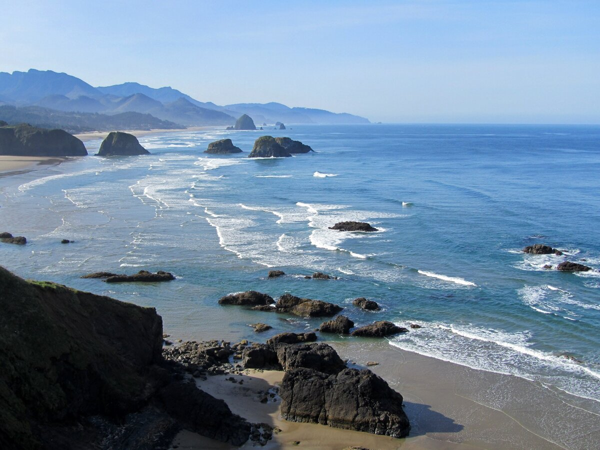
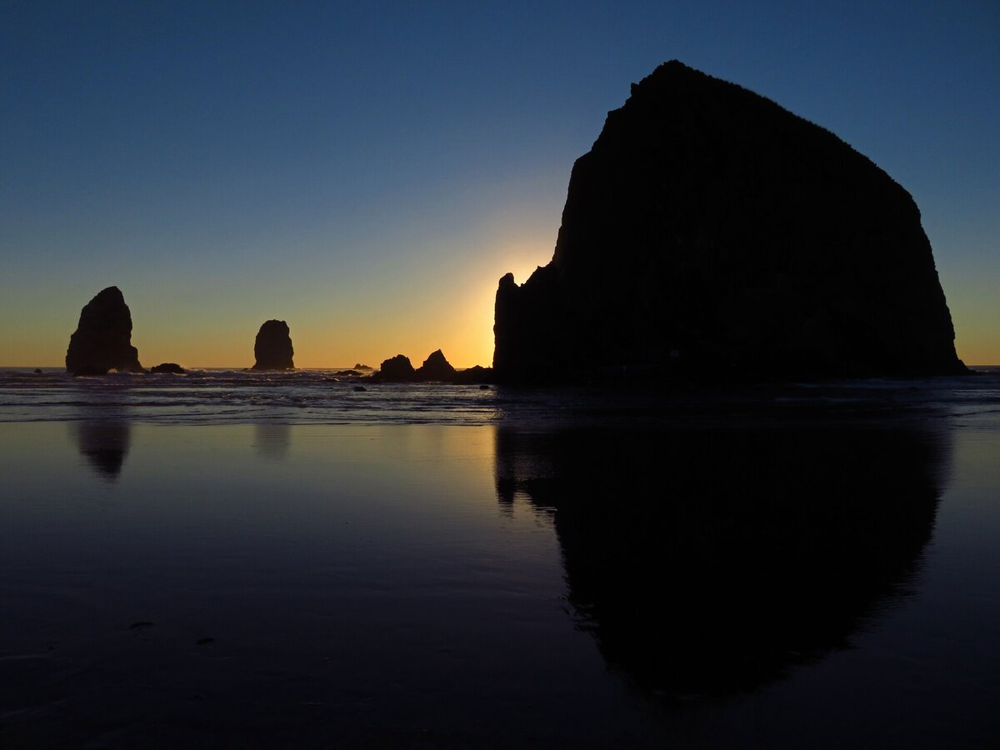

B1 · Travel & Places
Driving the Oregon Coast
A family in a rented car, eight days of rain, and a holiday nobody would have chosen and everybody remembers.
Play the audio and follow along, then read it again on your own. Tap or hover over a highlighted word to see what it means.
We have been driving down the Oregon coast for eight days, and it has been raining for six of them. I want to be clear that this is not a complaint. It is simply the central fact of the holiday, and everything else has arranged itself around it.
The plan, when we made it in March, involved beaches. My husband had been looking at photographs of long empty sand with the sun going down behind sea stacks, and he had been saying for weeks that we would eat outside every evening. We have eaten outside once. It was cold, and we did it out of stubbornness.


What we have actually been doing is driving Highway 101 in a rented car with two children in the back, stopping whenever the rain eases, and discovering that the coast is more interesting in this weather than it would have been in the sun. The Pacific here is not a swimming ocean. It is cold and enormous and loud, and on a gray day with the cloud sitting low on the water it looks like something that has been going on for a very long time without needing anyone to watch it.
The children have adapted faster than we have. Ben, who is nine, has been collecting things — agates, pieces of driftwood, a crab shell that we have been negotiating about since Tuesday — and he has worked out that the best time to look is immediately after a storm, when the tide has turned everything over. Maya has been reading in the back of the car for most of eight days and has finished four books, which she would not have done at home.
We have found the things you find when the original plan has collapsed. A bakery in a town of nine hundred people where we have now stopped three times. A lighthouse we walked up in horizontal rain and had entirely to ourselves, because nobody else was foolish enough. An aquarium on a genuinely terrible afternoon that turned out to be the best two hours of the trip. The tide pools at low tide, where Ben lay on his front for forty minutes watching an anemone that was not doing anything.
My husband has stopped mentioning the photographs. Yesterday evening the rain eased for about an hour near Bandon and we walked out among the sea stacks at low tide, the light came through underneath the cloud the way it does about twice a week here, and everything he had been imagining in March happened for fifty minutes and then stopped. He said it was worth the drive. I think he meant the whole eight days.


We have two days left. It is forecast to rain on both of them. We have been checking the forecast less often than we were at the start, which is probably the clearest sign that the holiday has worked.
Key Vocabulary
- to arrange itself around to organize itself with something else as the fixed center
- sea stack a tall column of rock standing in the sea near a coast
- stubbornness the refusal to change your mind even when you should
- to ease to become less intense
- to adapt to change in order to fit new conditions
- agate a banded semi-precious stone found on some beaches
- driftwood wood washed up on a shore by the sea
- tide the regular rise and fall of the sea
- to turn over to move things so that what was underneath is now on top
- to collapse to fail completely
- lighthouse a tower with a light warning ships away from a coast
- tide pool a pool of seawater left among rocks when the tide goes out
- anemone a soft sea creature that attaches itself to rock and looks like a flower
- forecast a prediction of what the weather will do
Driving the Oregon Coast — B1 · Travel & Places · Renan the Teacher, English Language Academy · https://renangrossi.github.io/englishclasses/reading/b1/santa-catarina.html
Interactive Exercises
Practice
Complete each exercise, then click Submit to see your score and an explanation for every answer.
Speaking & Writing
Discussion
There are no right answers here — use these to practice speaking, or write a short answer to each.
- The trip they had planned did not happen, and they remember the one they got. Has that happened to you?
- The writer says checking the forecast less often shows the holiday worked. What is your own sign that you have stopped worrying?
- Ben collects and Maya reads. Do children adapt to changed plans better than adults, and if so why?
- Is bad weather a reason to change a destination, or does it show you something a sunny day would hide?
- Write about 150 words about a trip that went differently from the plan, using the present perfect continuous for what was going on and the simple form for what you finished.